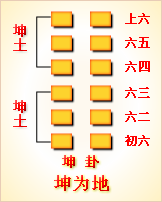
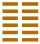

周易第二卦 坤 坤为地 坤上坤下
坤：元，亨，利牝马之贞。君子有攸往，先迷后得主，利西南得朋，东北丧朋。安贞，吉。
彖曰：至哉坤元，万物资生，乃顺承天。坤厚载物，德合无疆。含弘光大，品物咸亨。牝马地类，行地无疆，柔顺利贞。君子攸行，先迷失道，后顺得常。西南得朋，乃与类行;东北丧朋，乃终有庆。安贞之吉，应地无疆。
象曰：地势坤，君子以厚德载物。
初六：履霜，坚冰至。象曰：履霜坚冰，阴始凝也。驯致其道，至坚冰也。
六二：直，方，大，不习无不利。象曰：六二之动，直以方也。不习无不利，地道光也。
六三：含章可贞。或从王事，无成有终。象曰：含章可贞;以时发也。或从王事，知光大也。
六四：括囊;无咎，无誉。象曰：括囊无咎，慎不害也。
六五：黄裳，元吉。象曰：黄裳元吉，文在中也。
上六：战龙於野，其血玄黄。象曰：战龙於野，其道穷也。
用六：利永贞。象曰：用六永贞，以大终也。
文言曰：坤至柔，而动也刚，至静而德方，后得主而有常，含万物而化光。坤其道顺乎?承天而时行。
积善之家，必有馀庆;积不善之家，必有馀殃。臣弑其君，子弑其父，非一朝一夕之故，其所由来者渐矣，由辩之不早辩也。易曰：「履霜坚冰至。」盖言顺也。
直其正也，方其义也。君子敬以直内，义以方外，敬义立，而德不孤。「直，方，大，不习无不利」;则不疑其所行也。
阴虽有美，含之;以从王事，弗敢成也。地道也，妻道也，臣道也。地道无成，而代有终也。
天地变化，草木蕃;天地闭，贤人隐。易曰：「括囊;无咎，无誉。」盖言谨也。
君子黄中通理，正位居体，美在其中，而畅於四支，发於事业，美之至也。
阴疑於阳，必战。为其嫌於无阳也，故称龙焉。犹未离其类也，故称血焉。夫玄黄者，天地之杂也，天玄而地黄。
坤卦卦象，卦为地的象征意义
八卦之中“坤”代表地，用“ 
坤为地，表现地的功能、潜意识及柔顺的性质。
如果说乾代表天，那么坤代表地，田野。
乾卦所代表的方位为西北寒度，而坤则代表西南方位。
乾所代的天气为晴天，或是干旱之状。坤卦主天气阴晦昏暗，表示有阴云、雾气、冰霜。
乾卦所代表的颜色是红色，是因为天上有太阳的关系。而坤因为象征大地，所代表的颜色是黄色、黑色。
坤卦所代表的人物是：女性，皇妃、臣子、国民大众、祖母、母亲、妻子、女主人、阴气盛之人、忠厚之人、大腹之人、农夫俗子、小气者、消极者、胆怯者、房地产者、泥瓦工、小人等。
坤卦所代表的场所为田野、大地、乡村、平地。
坤卦所代表的数字为二、五、十。
坤卦所代表的动物为牛，也指牝马、猫、百兽。
坤卦所代表的静物为水泥、砖瓦、五谷、布帛、丝绵、方物、柔物，土中之物，牛肉、食品、大车、锅。
坤卦所代表的人体为部位为腹部、右肩、脾、胃、肌肉、女性生殖器。
坤卦所代表的味道为甘味、甜味。
六十四卦中的坤卦，是由两个坤卦上下相叠而成。象征地，顺从天。承载万物，伸展无穷无尽。坤卦以雌马为象征，表明地道生育抚养万物，而又依天顺时，性情温顺。它以“先迷后得”证明“坤”顺从“乾”，依随“乾”，才能把握正确方向，遵循正道，获取吉利。
《象》中这样分析坤卦：地势坤，君子以厚德载物。这里指出：坤象征大地，君子应效法大地，胸怀宽广，包容万物。
坤卦象征地，属于上上卦。《象》中这样来断此卦：肥羊失群入山岗，饿虎逢之把口张，适口充肠心欢喜，卦若占之大吉昌。
坤卦卦象：由于阴之成形莫大于地，所以坤卦的卦象首先代表地。因为母亲是慈祥而温柔的，母牛是温顺而任劳任怨的，布是柔软的，大众的本性是顺从，所以坤卦也象征母亲、母牛、布、众等等。自然、温顺、阴柔、顺从便是坤卦的卦德了。
关键词：周易,坤卦,坤为地,坤上坤下
坤卦：大吉大利。占问母马得到了吉利的征兆。君子贵族外出旅行经商，开始时迷了路，后来遇上招待客人的房东。往西南方向走有利，可以获得财物;往东北方向走会丧失财物。占问定居，得到吉利的预兆。
初六：脚下踩到了薄霜，结成坚实冰层的时令就快要到了。
六二：大地的形貌平直、方正、辽阔;虽然去到不熟悉的陌生地方，也不会有什么问题。
六三：周武王战胜殷商，是很好的占卜。有人参与战争，虽然没有战绩，但结局却很好。
六四：把收成装进口袋捆好，收成不好不坏。
六五：黄色裙裤是大吉大利的象征。
上六：龙在旷野上争斗，血流遍地。
用六：这是永久吉利的最好征兆。
①坤是本卦标题。坤的卦象是六个阴交，用来表示大地以及阴柔的事物。 本卦的内容与人在地上的生活有关。
②牝(pin)马:母马。
③攸(y0U)：所。
(4)主：主人，这里指接待旅客的房东。
(5)朋：朋贝，周代的货币。十枚贝壳串在起就是朋。
(6)安贞吉：占问定居而得到吉利的 预兆。
(7)直，方，大：指地貌平直、方正、辽阔。
(8)习:熟悉。
(9)含章：指周武王伐纣，战胜商纣王。
(10)可贞：称心如意的占卜。
(11)王事：大事，指战争。战争和祭把在古代都是最重要的事。
(12)括：收束，扎紧。囊：布口袋。
(13)黄裳：黄色的裙或裤。这是尊贵吉祥的标志。黄色的裙裳
(14)玄黄：血流的样子，是说血流得很多。
(15)用六：坤卦特有的交名。“用六”表示坤卦的全阴交将尽变为全阳交。